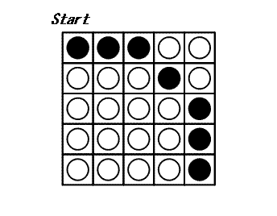

$N \times N$ disks are placed on a square game board. Each disk has a black side and white side.
At each turn, you may choose a disk and flip all the disks in the same row and the same column as this disk: thus $2 \times N - 1$ disks are flipped. The game ends when all disks show their white side. The following example shows a game on a $5 \times 5$ board.

It can be proven that $3$ is the minimal number of turns to finish this game.
The bottom left disk on the $N \times N$ board has coordinates $(0,0)$;
the bottom right disk has coordinates $(N-1,0)$ and the top left disk has coordinates $(0,N-1)$.
Let $C_N$ be the following configuration of a board with $N \times N$ disks:
A disk at $(x, y)$ satisfying $N - 1 \le \sqrt{x^2 + y^2} \lt N$, shows its black side; otherwise, it shows its white side. $C_5$ is shown above.
Let $T(N)$ be the minimal number of turns to finish a game starting from configuration $C_N$ or $0$ if configuration $C_N$ is unsolvable.
We have shown that $T(5)=3$. You are also given that $T(10)=29$ and $T(1\,000)=395253$.
Find $\sum \limits_{i = 3}^{31} T(2^i - i)$.
solve(i_start=3, i_end=3) → ?solve(i_start=3, i_end=31) → ?solve(i_start=3, i_end=20) → ?